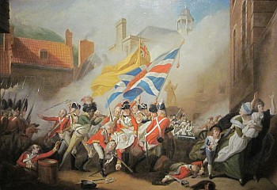

San Antonio, Texas,
U.S.A.
Lé 6 d'janvyi, 1973
Comme lé temps s'pâsse! Nouos r'vélà au jour dé l'annivèrsaithe dé la fanmeuse Batâle dé Jèrri tch'eut lieu l'six d'janvyi, 1781. Ouaithe qué y'a chent nénante-deux ans aniet qué l'Vièr Marchi fut l'camp d'batâle, l'êvènement est souvent dans mes pensées, et quand j'sis en Jèrri j'vais tréjous dithe eune priéthe au pid du monument du Mâjeur Peirson tch'est contre la muthâle dans l'sanctuaithe dé la Chapelle dé Nouotre Danme dans l'églyise Pârouaîssiale dé St. Hélyi. Ch'est bein à propos, étou, qu'chu monument-là s'trouve dans la chapelle où'est qué l'Saint Sacrément sé r'pose dans l'tabèrnacl'ye dé l'autel dêdié à la Sainte Vièrge Marie, prêt à êt' adminnistré par lé Minnistre au fidèle tch'est sus l'pus, pour lé souôt'nîn dans la travèrsée tchi mène au Paradis - comme i' nouos l'est ordonné dans la Litourgie.
En d'houors dé l'églyise, mais dans la tèrre sacrée du chînm'tchiéthe, j'vais m'arrêter un p'tit moment à la pièrre tombale tch'est sus la tombe du Baron de Rullecourt, aventuthi Français tch'eut l'toupé d'penser tch'i' pouvait forchi les Jèrriais à s'allier à la France, et tchi pèrdit sa vie en mème temps qué l'Mâjeur Peirson.
La vaillantise des soudards Angliais et des Miliciens Jèrriais tchi gangnîdrent chutte batâle-là en 1781, et d's armées Britanniques tchi finnîdrent par créér l'pus grand "Empire" du monde, mé fait penser à l'esprit contraithe tchi fait nouos jannes Améthitchains lus sauver dans d'aut' pays pour êviter d'êt' soudards. Tch'est tch'est dév'nu d'la vaillantise dé nouos jannes gens au jour d'aniet? Quand nou pense ès choses tchi s'pâssent - les drogues tchi lus endommagent l'esprit et l'chèrvé, lé manque dé prîncipe tchi les fait lus r'bînfrer contre l'autorité d'pathents et d'êcole, et l'abandon d's églyises et d'tchulte tch'a 'té l'entrémînse dé communicâtion à travèrs les siècl'yes entre lus anchêtres et l'Rouai des Rouais tchi préside dans lé Rouoyaume des Cieux, nou sé d'mande tchi sorte d'vie tch'étha la préchaine généthâtion?
Jé n'pouorrais pon oublier l's années des Batâles dé Hastings et d'Jèrri, car man nunmétho régimental quand j'fus accoutré dans la Milice Rouoyale dé Jèrri en 1908 'tait 1066 - année d'la Batâle dé Hastings - et pus tard quand j'm'engagis dans les rédgulièrs en Angliétèrre pour aller à la dgèrre dé 1914-1918 man nunmétho comme artilleux fut 91781, lé chiffre neuf ajouôté à 1781, année d'la Batâle dé Jèrri. Tchi drôles dé coïncidences, quand j'veins à y penser! J'ai tréjous ieu l'idée qu'ch'est eune bouanne chose d'êt' soudard quand un garçon est d'âge. I' n'y a rein au monde tchi peut lî donner un miyeu leçon d'bouanne condite et d'disciplinne, et i' n'y a autcheune doute tch'i' n'y en a pon assez à ch't heu pour les jannes. Dans san vivant, j'admithais l'Mâjeur Francis Arthur Labey de Gruchy, Député d'St. Ouën, quand i' s'mâtait sus ses pids d'driéthe dans L's Êtats pour dithe qué l'abandon d'La Milice Rouoyale dé Jèrri 'tait eune tragédie!
Les nouvelles généthâtions ont changi auve lé pâssage du temps. I' faut s'y attendre. comme nouos l'disait l'fanmeux poète Wace: "Tute rien se turne en declin. Tut chiet, tut muert, tut vait a fin." Et d'pis qu'tout veint à fîn, i' sé r'nouvelle, et nou peut dithe qué ch'est eune affaithe d'aut' temps, d'aut' moeurs, et qu'les jannes n'ont pon connu la vie sîmpl'ye et duthe, mais méthitouaithe, des anciens tchi n'ont connu qué l'travas et la nécessité d'gângni lus pain à la sueu d'lus fronts, mais tch'étaient p't êt' pus heutheux qu'nous viyant tch'i' n'avaient qu'chu but-là en veue. Lus seule ambition 'tait d'atchumuler assez pour vivre trantchilement et d'mett' un mio d'côté pour en cas d'malchance ou d'maladie et pour êt' seux d'n'êt' janmais sus la pâraisse. Ch'est pourtant ieux tch'ont créé la fondâtion d'la prospéthité d'au jour d'aniet tchi pèrmet ès jannes malcontents d'êt' êdutchis jusqu'ès dents, et d'aver autant d'sou dans lus pouchettes à dêpenser par sémaine comme lus anchêtres gângnaient dans un mais pour souôt'nîn la vie!
Arrivés au c'menchement d'eune nouvelles année, nou sé d'mande tch'est qu'l'av'nîn s'en va nouos apporter, mais nou n'peut qu'sénon espéther pour lé mus et prier l'Bouan Dgieu d'nouos aîdgi à supporter chein tchi nouos attend, car nou n'sait janmais tch'est tch'i' vouos pend sus la tête.
Espéthons qu'les Jèrriais et lus d'scendants dans chu Nouvieau Monde s'en vont contribuer, par lus esprits consèrvateurs, tout chein qu'lus anchêtres lus ont laîssi dans l'sang - l'îndustrie, l'honnêteté et l'îndépendance - des vèrtus nécessaithes dans la vie îndividuelle comme dans l's esprits d's autorités tchi gouvèrnent lé monde - au bein-être dé la vie à v'nîn. Y'en a tout pliein, d'scendants d'Jèrriais, dans chu Nouvieau Monde. Dans nouot' fanmile seule, j'contais l'aut' jour qué j'sommes au mains huiptante descendants d'mes péthe et méthe en Améthique. Ch'est presqu'-încriabl'ye!
George d'La Forge
17/1/1973
Viyiz étout: